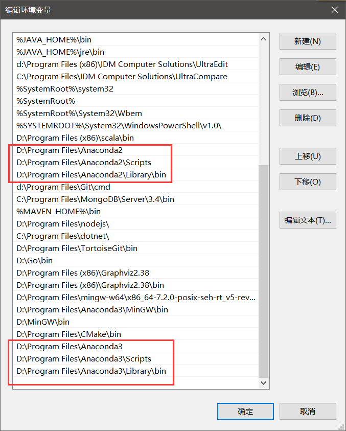
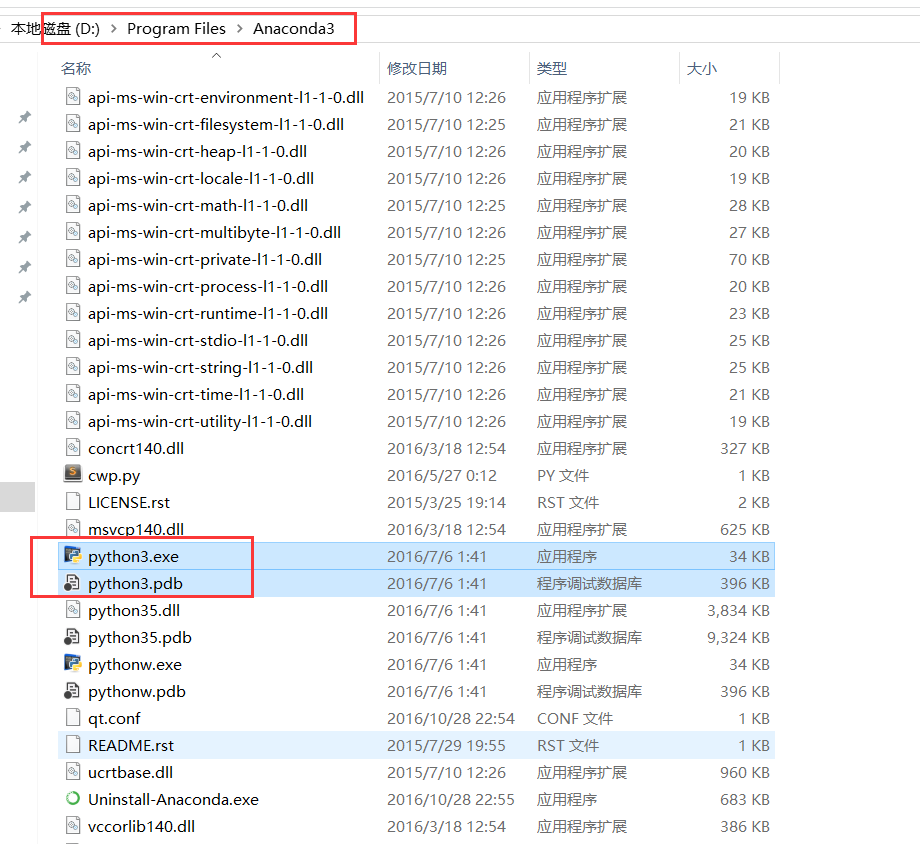
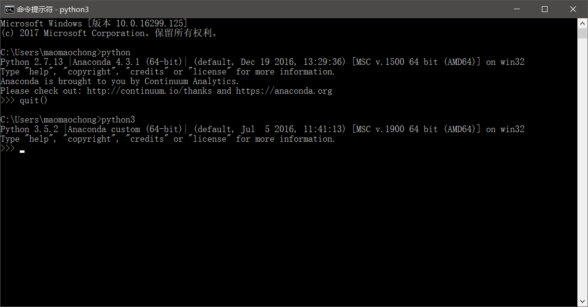
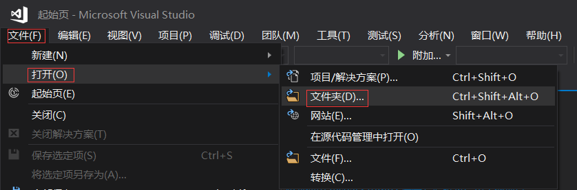
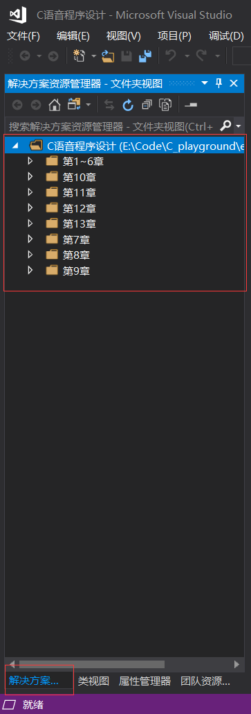
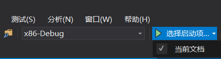

1、在键盘上按下win+R键，或在开始菜单图标上点击右键选择运行;
2、输入powershell，按下“确定”运行;
3、在窗口里输入或复制粘贴以下命令，注意只有一行：
Get-AppxPackage | % { Add-AppxPackage -DisableDevelopmentMode -Register “$($_.InstallLocation)\AppxManifest.xml” -verbose }
4、点击enter键，等待修复命令运行完成，重启电脑，完成之后BUG就被修复了
py2转py3遇到的问题
python2与python3在处理异常的区别：
- 1.所以异常都从 BaseException继承，并删除了StardardError
- 2.去除了异常类的序列行为和.message属性
- 3.用 raise Exception(args)代替 raise Exception, args语法
- 4.捕获异常的语法改变，引入了as关键字来标识异常实例，
在Py2中：1
2
3
4
5
6
7try:
raise NotImplementedError('Error')
except NotImplementedError, error:
print error.message
...
Error
在Py3中：1
2
3
4
5try:
raise NotImplementedError('Error')
except NotImplementedError as error: #注意这个 as
print(str(error))
Error
- 5.异常链，因为
__context__在3.0a1版本中没有实现
tuple parameter unpacking is not supported in Pyhton 3
As tuple parameters are used by lambdas because of the single expression limitation, they must also be supported. This is done by having the expected sequence argument bound to a single parameter and then indexing on that parameter:1
lambda (x, y): x + y
will be translated into:1
lambda x_y: x_y[0] + x_y[1]
py2与py3在map返回类型上的区别
py2：1
2
3
4
5
6
7
8
9Python 2.7.13 |Anaconda 4.3.1 (64-bit)| (default, Dec 19 2016, 13:29:36) [MSC v.1500 64 bit (AMD64)] on win32
In[2]: list_a = [2,3,4,5]
In[3]: list_b = [1,2,3,4]
In[4]: map(lambda a: a[0] / (a[1]+0.000000001), zip(list_a, list_b))
Out[4]:
[1.9999999979999998, 1.49999999925, 1.3333333328888888, 1.2499999996875]
In[5]: type(map(lambda a: a[0] / (a[1]+0.000000001), zip(list_a, list_b)))
Out[5]:
list
py3:1
2
3
4
5
6
7
8
9Python 3.5.2 |Anaconda custom (64-bit)| (default, Jul 5 2016, 11:41:13) [MSC v.1900 64 bit (AMD64)]
In[2]: list_a = [2,3,4,5]
In[3]: list_b = [1,2,3,4]
In[4]: map(lambda a: a[0] / (a[1]+0.000000001), zip(list_a, list_b))
Out[4]:
<map at 0x24dc066f160>
In[5]: type(map(lambda a: a[0] / (a[1]+0.000000001), zip(list_a, list_b)))
Out[5]:
map
在py3中需要用list()转换一下。
windows下py2与py3共存切换问题
配置环境变量

修改文件名称

效果如下

git切换分支报错Permission denied
git切换分支报错，如下：1
2
3
4
5
6
7
8
9
10
11
12
13
14
15
16
17
18
19
20
21
22
23
24maomaochong@Boredbird MINGW64 /d/Program Files/nodejs/blog (master)
$ git checkout source
error: cannot stat 'source/_posts': Permission denied
error: cannot stat 'source/_posts': Permission denied
error: cannot stat 'source/_posts': Permission denied
error: cannot stat 'source/_posts': Permission denied
error: cannot stat 'source/_posts': Permission denied
error: cannot stat 'source/_posts': Permission denied
error: cannot stat 'source/_posts': Permission denied
error: cannot stat 'source/_posts': Permission denied
error: cannot stat 'source/_posts': Permission denied
error: cannot stat 'source/_posts': Permission denied
error: cannot stat 'source/_posts': Permission denied
maomaochong@Boredbird MINGW64 /d/Program Files/nodejs/blog (master)
$ git checkout source
warning: unable to rmdir .deploy_git: Directory not empty
Checking out files: 100% (10345/10345), done.
M themes/next
Switched to branch 'source'
Your branch is up-to-date with 'origin/source'.
maomaochong@Boredbird MINGW64 /d/Program Files/nodejs/blog (source)
$
最后发现是文件占用问题，关掉后台的编辑器，顺利切换分支。
利用atom插件打造一套python的IDE
利用atom插件打造一套python的IDE
使用快捷键：Shift + Ctrl + M快速预览markdown
| 插件 | 说明 |
|---|---|
| Atom Runner | 运行python脚本 |
| autocomplete-python | python代码自动补全 |
| hydrogen | 在写脚本的同时运行ipython notebook |
| linter+linter-pylama | 代码错误提示 |
| platformio-ide-terminal | Atom内置终端 |
| project-manager | 快速切换你的多个项目文件夹 |
| python-autopep8 | 自动规范化python代码(使用pep8准则) |
| isort+python-isort | 自动规范化代码中的import |
| python-tools+hyperclick | ctrl+单击转到源代码 |
| todo-show | 管理你代码中的TODO(在你没有完成的代码最后加上TODO即可) |
| python-debugger | 调试python代码 |
| atom-python-test | 测试python代码 |
| atom-python-virtualenv | python的虚拟环境 |
以上是常用的python插件, 足够满足你的日常使用了
Visual Studio Tips
在 Visual Studio 中开发代码而无需创建项目或解决方案
在 Visual Studio 2017 中，你可以在 Visual Studio 中打开几乎任何类型的基于目录的项目的代码，而无需创建解决方案或者项目文件。 这意味着（例如，在 Git 上找到一个代码项目时）可以克隆该项目，然后在 Visual Studio 中直接打开并开始开发，而无需创建解决方案或项目。
在任意位置打开代码
可以通过以下方式，在 Visual Studio 中打开代码：
- 在 Visual Studio 菜单栏上，依次选择“文件”、“打开”、“文件夹”，然后浏览到代码位置。
- 在包含该代码的文件夹的上下文（右键单击）菜单上，选择“在 Visual Studio 中打开”命令。
- 选择 Visual Studio“开始”页上的“打开文件夹”链接。
- 打开从 GitHub 存储库中克隆的代码。


调试代码
不通过项目或解决方案即可在 Visual Studio 中调试代码。 对某些语言进行调试时，可能需要在代码项目中指定一个有效的启动文件，例如脚本、可执行文件或项目。 调试代码时，Visual Studio 会首先运行此指定代码。
工具栏上“开始”按钮旁的下拉列表框中列出了 Visual Studio 检测到的所有启动项，以及你在文件夹中专门选择的项。

Visual Studio 会自动识别项目，但是需要你将脚本（例如 Python 和 JavaScript）显式选择为启动项之后，项目才会出现在列表中。 此外，某些启动项（例如 MSBuild 和 CMake）可能有多个生成配置，这些生成配置会显示在运行按钮的下拉列表中。
调试可执行文件
在 Visual Studio 菜单上，选择“调试”。 在下拉菜单上，选择该项目，或者选择想要在解决方案资源管理器中显示为启动项的项目或文件。
选择 F5 键开始调试。


Statistical Inference and Estimation
Statistical Inference
Recall, a statistical inference aims at learning characteristics of the population from a sample; the population characteristics are parameters and sample characteristics are statistics.
A statistical model is a representation of a complex phenomena that generated the data.
- It has mathematical formulations that describe relationships between random variables and parameters.
- It makes assumptions about the random variables, and sometimes parameters.
- A general form: data = model + residuals
- Model should explain most of the variation in the data
- Residuals are a representation of a lack-of-fit, that is of the portion of the data unexplained by the model.
One-Way Tables and Goodness-of-Fit Test
Statistical Inference
Recall, a statistical inference aims at learning characteristics of the population from a sample; the population characteristics are parameters and sample characteristics are statistics.
A statistical model is a representation of a complex phenomena that generated the data.
- It has mathematical formulations that describe relationships between random variables and parameters.
- It makes assumptions about the random variables, and sometimes parameters.
- A general form: data = model + residuals
- Model should explain most of the variation in the data
- Residuals are a representation of a lack-of-fit, that is of the portion of the data unexplained by the model.
手撸PCA
降维技术
PCA(Principal Component Analysis,主成分分析)
在PCA中，数据从原来的坐标系转换到了新的坐标系，新坐标系的选择是由数据本身决定的。第一个新坐标轴选择的是原始数据中方差最大的方向，第二个新坐标轴的选择和第一个坐标轴正交且具有最大方差的方向。该过程一直重复，重复次数为原始数据中特征的数目。然后会发现，大部分方差都包含在最前面的几个新坐标轴中。因此，我们可以忽略余下的坐标轴，即对数据进行了降维处理。
FA(Factor Analysis,因子分析)
在因子分析中，假设在观察数据的生成中有一些观察不到的隐变量(latent variable)。假设观察数据是这些隐变量和某些噪声的线性组合。那么隐变量的数据可能比观察数据的数目少，也就是说通过找到隐变量就可以实现数据的降维。
ICA(Independent Component Analysis,独立成分分析)
ICA假设数据是从N个数据源生成的，这额鹅鹅鹅一点和因子分析有些类似。假设数据为多个数据源的混合观察结果，这些数据源之间在统计上是相互独立的，而在PCA中只假设数据是不相关的。同因子分析一样，如果数据源的数目少于观察数据的数目，则可以实现降维过程。